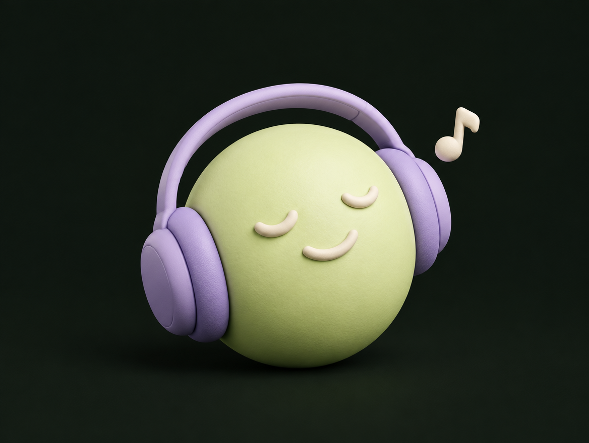

오늘은 세일즈를 잘하기 위한 패시브 스킬과 액티브 스킬을 연습합니다. 3step은 고객을 대하는 자세, 5step은 고객과 대화하는 방법입니다. 같은 말을 하더라도 어떤 분위기로 말을 거느냐에 따라 대화가 달라집니다. 두 가지를 함께 몸에 익혀봅시다.
오늘 익힐 두 가지
고객을 대하는 자세 고객과 나누는 대화
3
PASSIVE SKILL
어떤 사람으로 느껴지는가?
목적은 편안한 분위기. 고객의 경계를 낮추는 기본 태도.
5
ACTIVE SKILL
어떻게 이야기를 이어가는가?
목적은 자연스러운 흐름. 이해부터 실행까지 이어주는 대화.
3step은 대화 내내.5step은 한 호흡으로.
3step의 목적은 대화를 편하게 시작할 수 있는 분위기를 만드는 것입니다. 기대하는 효과는 고객이 느끼는 경계를 낮추고 우리에게도 고객의 반응을 살필 여유를 주는 것입니다. 5step의 목적은 대화의 흐름을 만드는 것입니다. 고객이 왜 들어야 하는지 이해하고, 무엇을 할 수 있는지 알아보기 쉽게 연결합니다. 3step은 대화 내내 유지하고 5step은 고객의 대답에 맞춰 이어갑니다.
3STEP / 기본값으로 장착
눈 맞추고, 웃고, 열정 있게.
Eye Contact
“당신에게 건네는 말”
Smile
“편하게 이야기해요”
Enthusiasm
“이거, 정말 흥미로워요”
Eye Contact, Smile, Enthusiasm. 사진 속 고객 응대의 세 가지 원칙입니다. 눈을 맞추며 고객에게 말을 건네고 반응을 살핍니다. 반가운 미소와 가벼운 농담으로 대화 분위기를 만듭니다. 그리고 내 이야기에 관심과 열정을 담습니다. 열정은 큰 목소리만을 뜻하지 않습니다. 또렷한 설명, 목소리의 강약, 고객의 답에 대한 반응으로도 전달됩니다. 세 가지를 차례대로 끝내기보다 대화하는 동안 함께 유지합니다. 같은 인사를 무표정하게 한 번, 이 세 가지를 담아 한 번 해보며 느낌의 차이를 보여주세요.
SET YOUR MOOD
당신의 무드를 정하고 지켜라.
고객을 만나기 전, 내 기분의 스위치부터.
좋아하는 노래 한 곡.
기분부터 먼저 예열하기.

오늘 내가 지킬 무드를 먼저 정합니다. 예를 들면 ‘밝고 편안하게, 설명할 때는 또렷하게’입니다. 그 무드를 꺼내는 스위치를 준비합니다. 음악 버튼에서는 기분 좋아지는 노래 한 곡을, 대사 버튼에서는 영화나 애니 속 나에게 힘이 되는 말을 떠올려봅니다. 마음에 드는 대사를 실제로 나에게 말해줘도 좋습니다. 리셋 버튼은 거절을 듣거나 지쳤을 때 쓰는 방법입니다. 한 번 숨을 고르고 어깨를 펴고, 다음 고객에게 새롭게 인사합니다. [참여 질문] 여러분의 무드를 바꿔주는 노래나 대사는 무엇인가요? 한두 명에게 짧게 들어봅니다.
KEEP IT A CONVERSATION
피치도 결국, 대화다.
이 모든 게 “대화”의 연장선임을 잊지 말자.
상대의 말이 다음 문장을 바꾼다.
나“잠깐 이야기 괜찮으세요?”
고객“어떤 이야기인데요?”
나“혹시 이런 생각 해보셨어요?”
구조를 외워도 이 모든 것이 대화의 연장선이라는 사실은 잊지 않습니다. 내가 말하고 고객이 반응하면 그 반응을 듣고 이어갑니다. 질문을 했으면 답을 기다리고, 다른 생각을 말하면 그 생각을 듣습니다. 내가 준비한 문장을 모두 말하는 것보다 고객과 실제로 대화를 주고받는 것이 중요합니다. 쿠션 멘트도 이 흐름 안에 있습니다. ‘바쁘실 텐데, 잠깐 괜찮으세요?’처럼 상황을 헤아리는 말을 건네고 실제 답에 맞춰 행동합니다.
5STEP / 구조째로 기억하기
인사부터 재확인까지, 한 호흡으로.
01
인사 + 농담 한마디
경계를 낮추고, 대화하고 싶은 분위기를 만들기.
문장은 내 말투로. 흐름은 머릿속에.
5step의 정식 명칭은 Intro, Short Story, Presentation, Closing, Rehash입니다. 각 단계를 눌러 목적을 짚어주세요. Intro는 인사와 농담, 리액션으로 경계를 낮춥니다. Short Story는 문제를 짧고 명확하게 이야기해 호기심을 높입니다. 쉽게 공감할 Yes Question을 건네고 답을 듣습니다. Presentation은 문제의 해결책을 직접 보여주는 단계입니다. Closing은 지금 할 수 있는 행동을 제안합니다. Rehash는 금액과 주기, 시작 시점 등 거래 정보를 다시 확인해 오해를 줄이고 만족스럽게 마무리합니다. 구조째로 외우되 실제 문장은 자신의 말투와 고객의 반응에 맞춰 바꿉니다.
01 / INTRO
첫마디는, 조금 가볍게.
인사와 함께 농담 한마디. 대화의 문턱을 낮춰보자.
나 · 웃으며“저 오늘 인사 멘트 연습하고 왔는데, 티 많이 나죠? ㅎㅎ”
고객“조금요 ㅎㅎ”
한마디 하고, 진짜로 반응을 보자.
위 대화는 연습용 예시입니다. 인사와 함께 무조건 농담 한마디를 넣어보는 연습을 해봅시다. 본인에게 자연스러운 표현으로 바꿔도 좋습니다. 목적은 상대가 편하게 이야기할 수 있도록 경계를 낮추는 것입니다. 외모나 민감한 상황을 소재로 삼기보다 내가 조금 긴장했다는 이야기처럼 가벼운 소재로 시작합니다. 실제 반응을 보고 리액션을 더해주세요. 반응이 없으면 농담을 설명하거나 반복하지 말고 자연스럽게 다음 이야기로 넘어갑니다. 고객이 웃어야 한다는 부담까지 주지는 않습니다.
02 → 03 → 04
“그래서, 어떻게 하면 돼요?”
SHORT STORY
문제는 짧게.
“깨끗한 물이 없다면 어떻게 될까요?”
궁금하게 만들고 고객의 답을 듣기PRESENTATION
해결은 명확하게.
“이 물품이 어떻게 도움을 주는지 보세요.”
방법을 보여주고 참여의 의미 연결하기CLOSING
행동은 지금.
“괜찮으시면 참여 방법을 같이 확인해볼까요?”
지금 할 수 있는 액션포인트 만들기
05 / REHASH마지막엔 약속한 내용을 다시 확인하고, 감사 인사.
Short Story에서는 확인된 사실 중 인상적인 한 가지로 문제를 짧고 선명하게 전합니다. Tone of Voice와 Body Language를 내용에 맞게 사용합니다. Presentation은 실제 구호물품이나 피치 자료를 보여주며 해결책을 설명합니다. 고객의 참여가 어떻게 기여하는지 해당 캠페인의 실제 안내에 맞춰 연결합니다. Closing에서는 지금 할 수 있는 행동을 분명하게 제안합니다. 제공된 자료의 TAAIS는 Trial(시도), Assumptive(참여를 가정한 대화), Alternative(대안 제시), Indifference(결과에 조급해하지 않는 태도), Silence(질문 뒤 기다림)입니다. 참여 후의 과정을 구체적으로 그려주되, 실제 진행 전에는 고객의 명확한 선택을 확인합니다. 질문을 던졌다면 잠깐 기다려주세요. 마지막 Rehash에서는 선택한 내용과 금액·주기·안내 사항을 다시 확인하고 감사 인사로 마무리합니다.
일상에서 써먹기
점심 메뉴도 5step으로?
모든 상황에 한 번씩 적용해보자. 그러다 보면, 습관이 된다.
짝과 함께 30초씩 바꿔보기 ↗
Intro
“오늘도 메뉴 선정 위원회 열자!”
Short Story
“시간 없는데, 웨이팅은 힘들겠지?”
Presentation
“그럼 근처에서 포장해오면 어때?”
Closing
“좋으면 지금 메뉴 같이 고를까?”
Rehash
“이 메뉴 두 개, 포장 맞지?”
한 줄씩 말하고, 상대의 답을 기다리기.
구조를 습관으로 만들려면 일상에서도 써보면 좋습니다. 점심 메뉴 정하기, 친구와 약속 잡기, 동료에게 새로운 방법을 제안하기 모두 연습이 됩니다. 이 예시는 상대가 동의하며 이어지는 경우입니다. 다른 답이 나오면 이유를 듣고 제안을 바꿉니다. 짝과 30초씩 대화를 해봅시다. 한 사람은 메뉴나 일상 속 대상을 소개하고 다른 사람은 자기 생각대로 답합니다. 시선과 미소, 열정을 유지하면서 인사·문제·해결·실행·재확인을 이어봅니다. 문장을 정확히 외웠는지보다 자연스러운 대화였는지 서로 말해줍니다.
THE LAST 10 SECONDS
마지막 인사까지, 좋은 무드로.
거절을 들어도, 다음 고객 앞에선 새로운 첫인사.
“들어주셔서 감사해요. 좋은 하루 보내세요!”
3step나의 무드를 지키자.5step자연스럽게 대화하자.
다음.
마지막 10초까지 3step을 지켜봅시다. 바쁜 고객에게는 ‘바쁘신 와중에 들어주셔서 감사해요’, 금액이 부담스러운 고객에게는 ‘관심 가져주셔서 감사해요’라고 짧게 인사합니다. 이미 후원 중이라면 함께해주심에 감사하고, 불편한 경험을 말하면 먼저 공감하고 이야기를 들어줍니다. 대화를 원하지 않으면 좋은 하루를 빌며 마무리합니다. 그다음 한 번 숨을 고르고 다음 고객에게 새롭게 인사합니다. 3step으로 나의 무드를 지키고 5step으로 자연스럽게 대화하는 것. 오늘 바로 한 번 써봅시다.